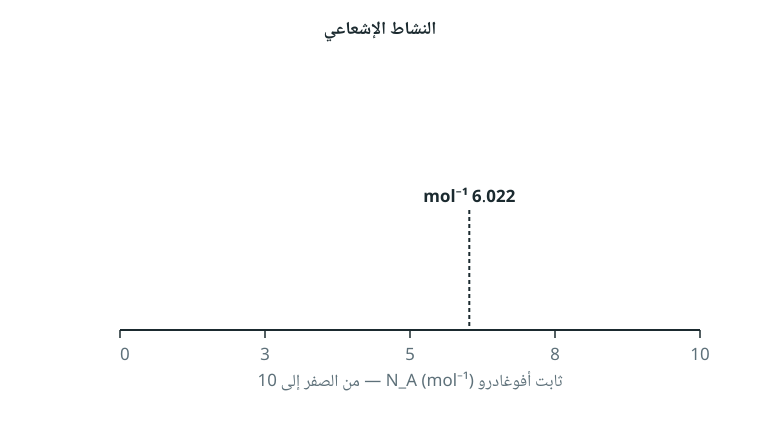

النشاط الإشعاعي
Radioactive activity
النشاط الإشعاعي هو عدد التحللات النووية في وحدة الزمن لعينة مشعّة، ووحدته البيكريل أي تحلل واحد في الثانية، ويتناقص أُسّياً بعمر نصف ثابت لكل نويدة.
النشاط A لعينة مشعّة هو معدل تحلل نوى ذراتها: A = −dN/dt = λ·N، حيث N عدد النوى غير المتحللة وλ ثابت التحلل بوحدة s⁻¹. ووحدته البيكريل Bq = 1 تحلل/ثانية، والكوري Ci = 3.7×10¹⁰ Bq. ويتناقص عدد النوى أُسّياً: N(t) = N₀·exp(−λ·t)، ومنه A(t) = A₀·exp(−λ·t). ويرتبط ثابت التحلل بعمر النصف: λ = ln2/T½. مثال: عيّنة من اليود-131 عمر نصفه 8.02 يوم، نشاطها الابتدائي 400 MBq، بعد 30 يوماً تصبح A = 400 × exp(−ln2 × 30/8.02) = 400 × exp(−2.593) = 30.0 MBq.
كيف تعمل الظاهرة؟
تحلل النواة عملية عشوائية على مستوى النواة الواحدة: لا يمكن التنبؤ بمتى تتحلل نواة معيّنة، لكن احتمال تحللها في وحدة الزمن ثابت λ. ومن ثبات هذا الاحتمال لكل نواة ينتج أن معدل التحلل الكلي يتناسب مع عدد النوى المتبقية، وهو ما يعطي التناقص الأُسّي. وهذا ليس «تقادماً» كتقادم الآلات، بل احتمالاً ثابتاً لا يتغير بعمر النواة: نواة عمرها مليون سنة لها الاحتمال نفسه للتحلل في الثانية التالية كنواة حديثة. ولهذا لا يوجد «عمر» للنواة بل عمر نصف إحصائي فقط، وهو ما يجعل قياس النشاط دقيقاً عند الأعداد الكبيرة ومتذبذباً عند الأعداد الصغيرة.
العلاقة بالأرقام
A = λN، وλ = ln2/T½، وN(t) = N₀exp(−λt)، وA(t) = A₀exp(−λt). والكتلة المقابلة: m = A·M·T½/(ln2·N_A). مثال عددي: يود-131، T½ = 8.02 يوم = 693 000 s، λ = 0.6931/693 000 = 1.0002×10⁻⁶ s⁻¹. لنشاط 400 MBq = 4.0×10⁸ Bq: N = 4.0×10⁸/1.0002×10⁻⁶ = 4.0×10¹⁴ نواة. والكتلة: m = 4.0×10¹⁴ × 131/(6.022×10²³) = 8.70×10⁻⁸ g = 87 ng فقط.
مفاهيم متقاربة
يُفرَّق بين النشاط والإشعاع المنبعث: كل تحلل قد ينتج جسيمات وأشعة غاما بأعداد مختلفة، فالنشاط لا يساوي عدد الفوتونات. ويُفرَّق بين البيكريل والكوري: 1 Ci = 3.7×10¹⁰ Bq، وهو تعريف تاريخي مبني على نشاط 1 g من الراديوم-226. ويُفرَّق بين عمر النصف والعمر المتوسط: العمر المتوسط τ = 1/λ = T½/ln2 = 1.4427·T½، وهو أطول من عمر النصف. وأخيراً يُفرَّق بين النشاط النوعي (Bq/kg) والنشاط الكلي (Bq)، فالأول خاصية للمادة والثاني للعينة.
حدود التطبيق
قانون التناقص الأُسّي يفترض أن λ ثابت لا يتغير بالظروف الكيميائية أو الحرارية، وهذا صحيح عملياً لأن التحلل النووي لا يتأثر بالبيئة. لكنه لا ينطبق حين تكون النويدة في سلسلة تحلل، حيث تتغذى من أب مشع فتصير المعادلة منظومة معادلات لا معادلة واحدة. ولا ينطبق على النوى القصيرة العمر جداً مقارنة بزمن القياس، حيث تتذبذب الأعداد. وأخيراً النشاط لا يقول شيئاً عن الخطر الصحي بلا معرفة نوع الإشعاع وطاقته والمسافة والتدريع.

| الكمية | القيمة | المصدر |
|---|---|---|
| ثابت أفوغادرو N_A | 6.022 140 76×10²³ mol⁻¹ | [1] |
| كتلة البروتون m_p | 1.672 621 925 95×10⁻²⁷ kg | [2] |
| نشاط يود-131 بعد 30 يوماً من 400 MBq | 29.9 MBq | [1] |
المصادر
- 1 CODATA Value: Avogadro constant — NIST — CODATA 2022 recommended values (2024). physics.nist.gov/cgi-bin/cuu/Value?na · اطُّلع عليه 2026-11-21
- 2 CODATA Value: proton mass — NIST — CODATA 2022 recommended values (2024). physics.nist.gov/cgi-bin/cuu/Value?mp · اطُّلع عليه 2026-11-21
- 3 The International System of Units (SI), 9th edition (2019) — BIPM — Bureau International des Poids et Mesures (2019). www.bipm.org/en/publications/si-brochure · اطُّلع عليه 2026-11-21
استشهد بهذا المصطلح
الصيغتان مبنيتان من بيانات الصفحة نفسها: العنوان والتاريخ ورابط النسخة المنشورة.
النشاط الإشعاعي — Radioactive activity. (2026). ديوان المعرفة — انفراد. https://infiradev.com/diwan/terms/term-radioactive-activity.html
@misc{term-radioactive-activity2026,
title = {النشاط الإشعاعي},
titleaddon = {Radioactive activity},
howpublished = {{ديوان المعرفة — انفراد} — مرجع علمي عربي},
year = {2026},
url = {https://infiradev.com/diwan/terms/term-radioactive-activity.html},
urldate = {2026-11-26},
note = {مراجعة علمية: hermes (مراجعة معتمدة 2026-11-26)}
}
راجعه: hermes (مراجعة معتمدة 2026-11-26) · 2026-11-26 · آخر تحديث 2026-11-21